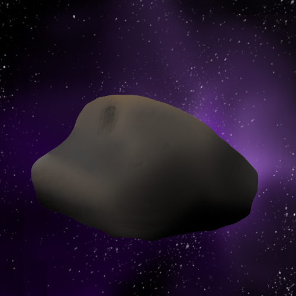

소행성(asteroid)

태양 주위를 공전하는 행성보다 크기가 작고 타원형 또는 불규칙한 모양의 천체이다.
주로 화성과 목성의 궤도 사이에 띠를 이루며 집중적으로 분포한다.(소행성대)
처음으로 발견된 소행성은 세레스이며 일부 소행성은 자신의 위성을 가지고 있다. 가스로 된 코마나 꼬리를 가지지 않는다는 점에서 혜성과 구분되지만, 일부 소행성은 과거에 혜성이었다. 그래서 목성 궤도 밖의 천체를 포함해 소행성체로 구분한다.